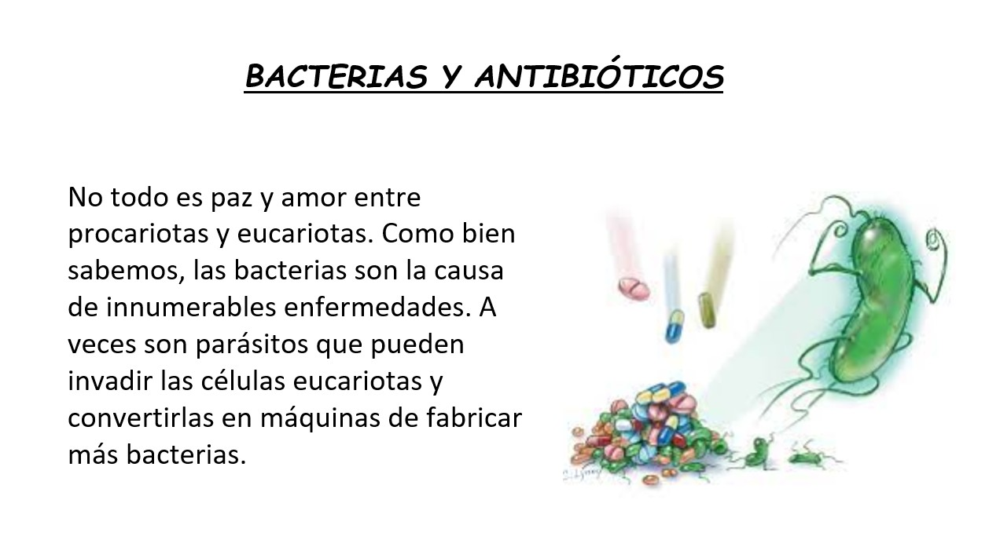
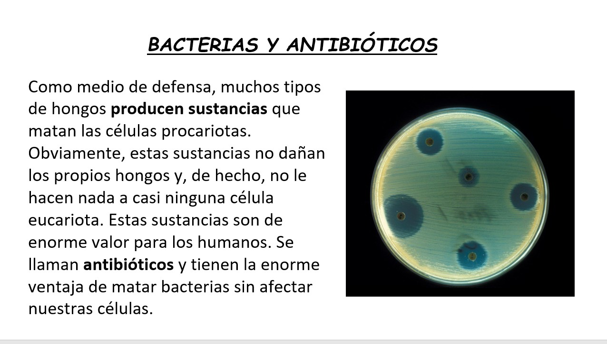
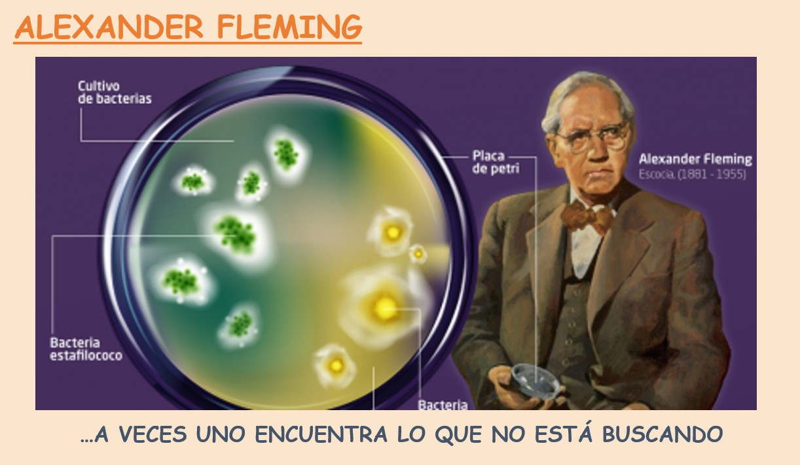
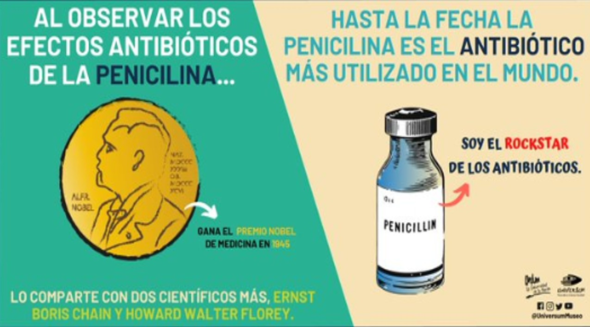
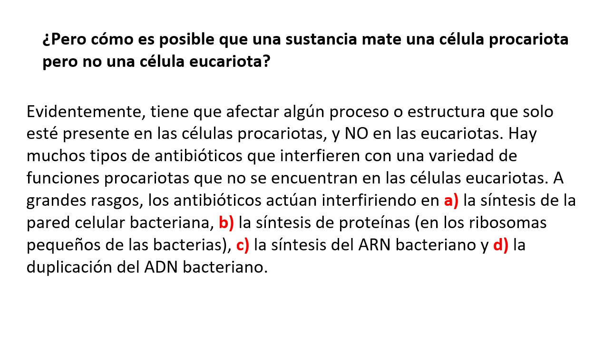

Columna de Opinión: La Música y el Aprendizaje
El estudio de los seres vivos y las bacterias requiere de un ambiente propicio para el enfoque y la atención. Acompañar la lectura de biología con la música de nuestras bandas favoritas ayuda a dinamizar el aprendizaje.